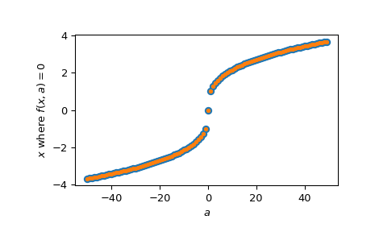

scipy.optimize.newton¶
-
scipy.optimize.newton(func, x0, fprime=None, args=(), tol=1.48e-08, maxiter=50, fprime2=None, x1=None, rtol=0.0, full_output=False, disp=True)[source]¶ Find a zero of a real or complex function using the Newton-Raphson (or secant or Halley’s) method.
Find a zero of the function func given a nearby starting point x0. The Newton-Raphson method is used if the derivative fprime of func is provided, otherwise the secant method is used. If the second order derivative fprime2 of func is also provided, then Halley’s method is used.
If x0 is a sequence with more than one item, then
newtonreturns an array, and func must be vectorized and return a sequence or array of the same shape as its first argument. If fprime or fprime2 is given, then its return must also have the same shape.- Parameters
- funccallable
The function whose zero is wanted. It must be a function of a single variable of the form
f(x,a,b,c...), wherea,b,c...are extra arguments that can be passed in the args parameter.- x0float, sequence, or ndarray
An initial estimate of the zero that should be somewhere near the actual zero. If not scalar, then func must be vectorized and return a sequence or array of the same shape as its first argument.
- fprimecallable, optional
The derivative of the function when available and convenient. If it is None (default), then the secant method is used.
- argstuple, optional
Extra arguments to be used in the function call.
- tolfloat, optional
The allowable error of the zero value. If func is complex-valued, a larger tol is recommended as both the real and imaginary parts of x contribute to
|x - x0|.- maxiterint, optional
Maximum number of iterations.
- fprime2callable, optional
The second order derivative of the function when available and convenient. If it is None (default), then the normal Newton-Raphson or the secant method is used. If it is not None, then Halley’s method is used.
- x1float, optional
Another estimate of the zero that should be somewhere near the actual zero. Used if fprime is not provided.
- rtolfloat, optional
Tolerance (relative) for termination.
- full_outputbool, optional
If full_output is False (default), the root is returned. If True and x0 is scalar, the return value is
(x, r), wherexis the root andris aRootResultsobject. If True and x0 is non-scalar, the return value is(x, converged, zero_der)(see Returns section for details).- dispbool, optional
If True, raise a RuntimeError if the algorithm didn’t converge, with the error message containing the number of iterations and current function value. Otherwise, the convergence status is recorded in a
RootResultsreturn object. Ignored if x0 is not scalar. Note: this has little to do with displaying, however, the `disp` keyword cannot be renamed for backwards compatibility.
- Returns
- rootfloat, sequence, or ndarray
Estimated location where function is zero.
- r
RootResults, optional Present if
full_output=Trueand x0 is scalar. Object containing information about the convergence. In particular,r.convergedis True if the routine converged.- convergedndarray of bool, optional
Present if
full_output=Trueand x0 is non-scalar. For vector functions, indicates which elements converged successfully.- zero_derndarray of bool, optional
Present if
full_output=Trueand x0 is non-scalar. For vector functions, indicates which elements had a zero derivative.
Notes
The convergence rate of the Newton-Raphson method is quadratic, the Halley method is cubic, and the secant method is sub-quadratic. This means that if the function is well-behaved the actual error in the estimated zero after the nth iteration is approximately the square (cube for Halley) of the error after the (n-1)th step. However, the stopping criterion used here is the step size and there is no guarantee that a zero has been found. Consequently, the result should be verified. Safer algorithms are brentq, brenth, ridder, and bisect, but they all require that the root first be bracketed in an interval where the function changes sign. The brentq algorithm is recommended for general use in one dimensional problems when such an interval has been found.
When
newtonis used with arrays, it is best suited for the following types of problems:The initial guesses, x0, are all relatively the same distance from the roots.
Some or all of the extra arguments, args, are also arrays so that a class of similar problems can be solved together.
The size of the initial guesses, x0, is larger than O(100) elements. Otherwise, a naive loop may perform as well or better than a vector.
Examples
>>> from scipy import optimize >>> import matplotlib.pyplot as plt
>>> def f(x): ... return (x**3 - 1) # only one real root at x = 1
fprimeis not provided, use the secant method:>>> root = optimize.newton(f, 1.5) >>> root 1.0000000000000016 >>> root = optimize.newton(f, 1.5, fprime2=lambda x: 6 * x) >>> root 1.0000000000000016
Only
fprimeis provided, use the Newton-Raphson method:>>> root = optimize.newton(f, 1.5, fprime=lambda x: 3 * x**2) >>> root 1.0
Both
fprime2andfprimeare provided, use Halley’s method:>>> root = optimize.newton(f, 1.5, fprime=lambda x: 3 * x**2, ... fprime2=lambda x: 6 * x) >>> root 1.0
When we want to find zeros for a set of related starting values and/or function parameters, we can provide both of those as an array of inputs:
>>> f = lambda x, a: x**3 - a >>> fder = lambda x, a: 3 * x**2 >>> np.random.seed(4321) >>> x = np.random.randn(100) >>> a = np.arange(-50, 50) >>> vec_res = optimize.newton(f, x, fprime=fder, args=(a, ))
The above is the equivalent of solving for each value in
(x, a)separately in a for-loop, just faster:>>> loop_res = [optimize.newton(f, x0, fprime=fder, args=(a0,)) ... for x0, a0 in zip(x, a)] >>> np.allclose(vec_res, loop_res) True
Plot the results found for all values of
a:>>> analytical_result = np.sign(a) * np.abs(a)**(1/3) >>> fig = plt.figure() >>> ax = fig.add_subplot(111) >>> ax.plot(a, analytical_result, 'o') >>> ax.plot(a, vec_res, '.') >>> ax.set_xlabel('$a$') >>> ax.set_ylabel('$x$ where $f(x, a)=0$') >>> plt.show()
